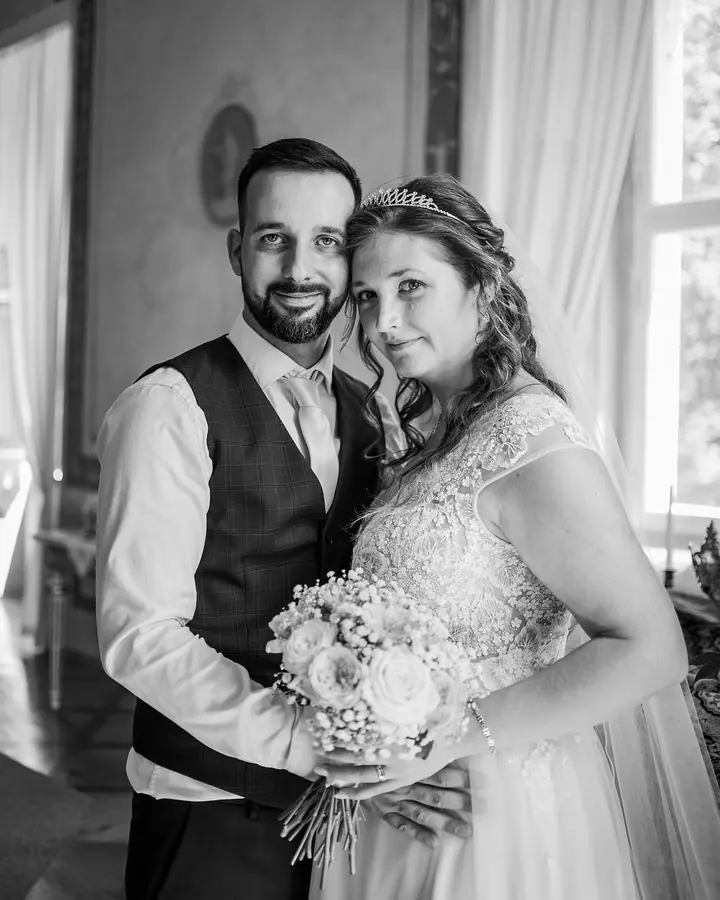
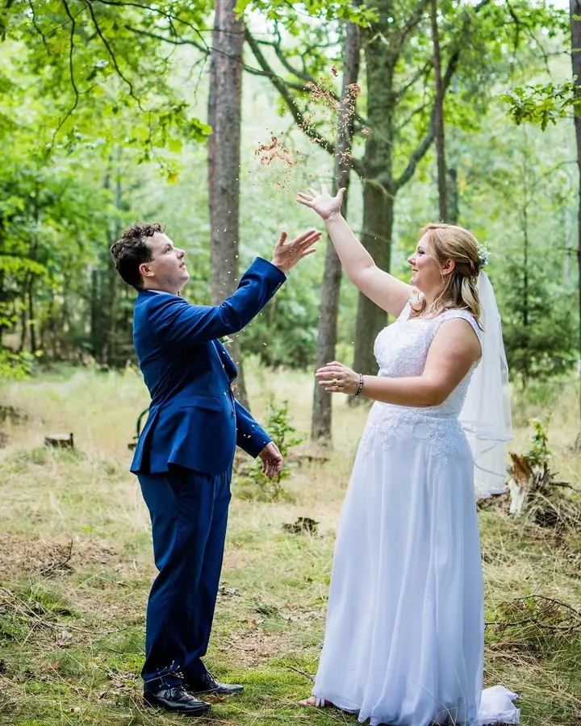
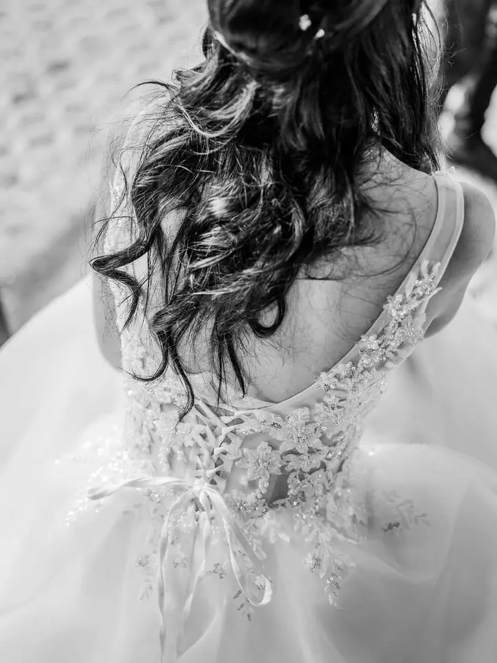
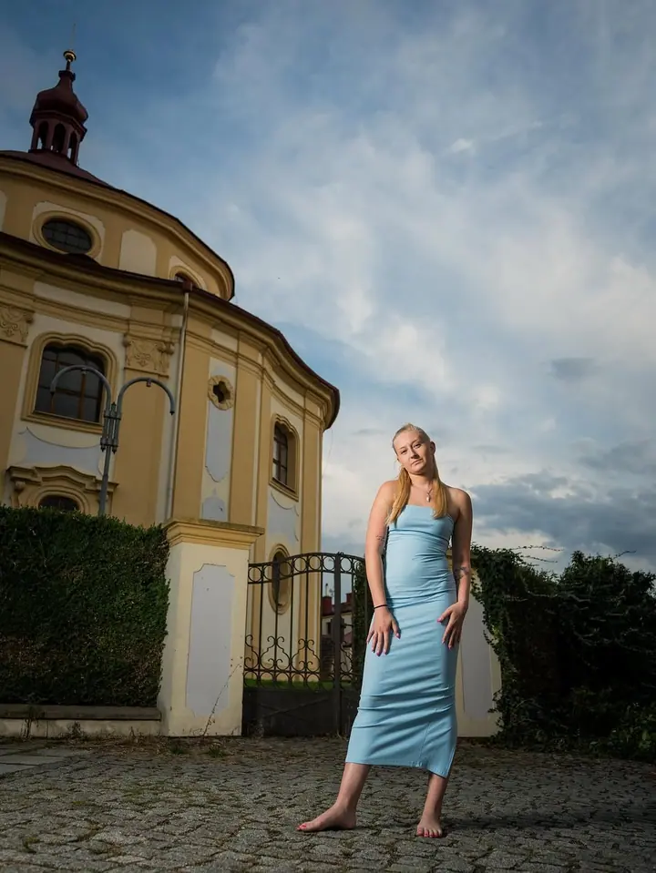
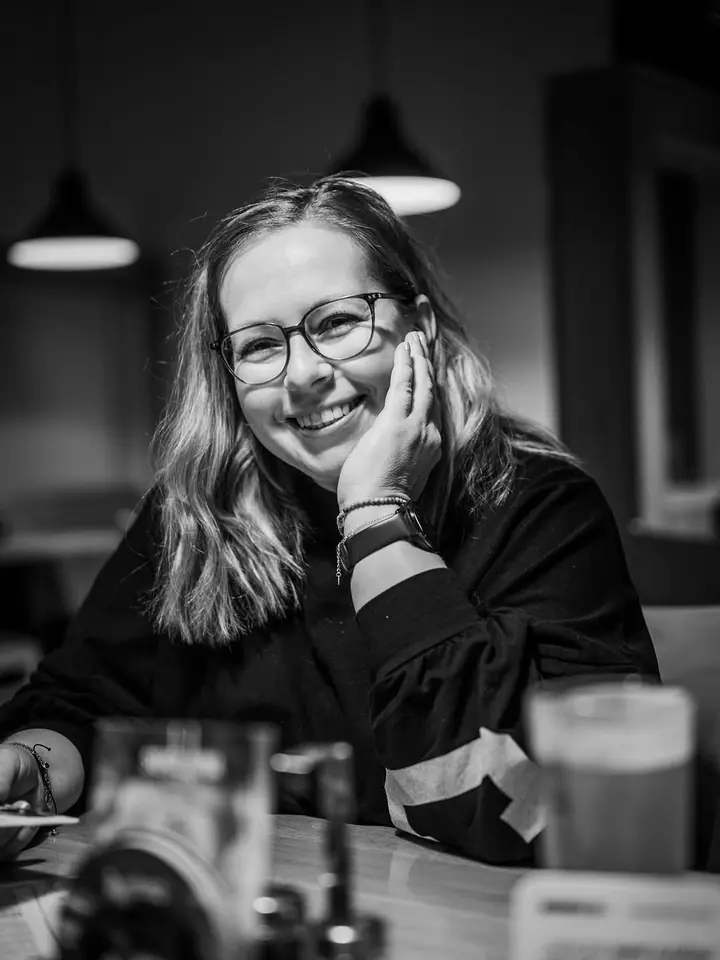
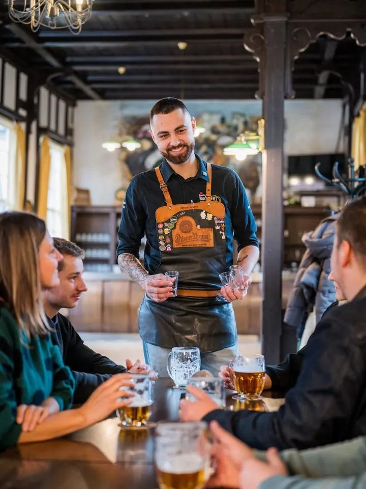
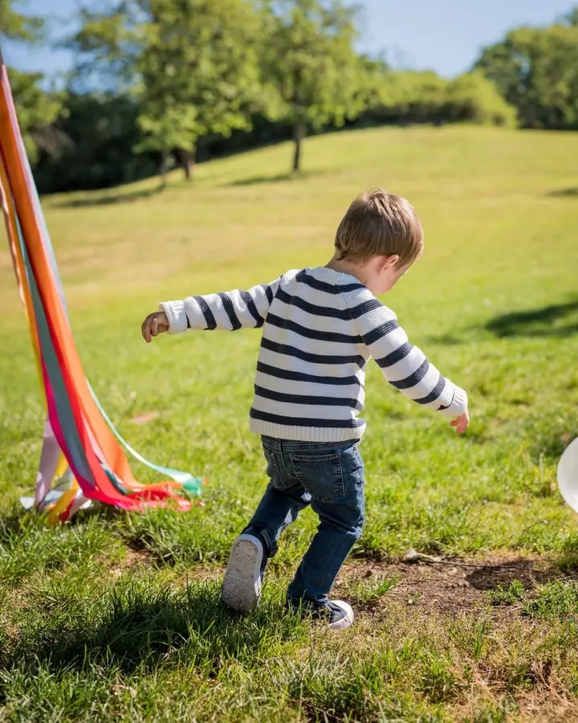
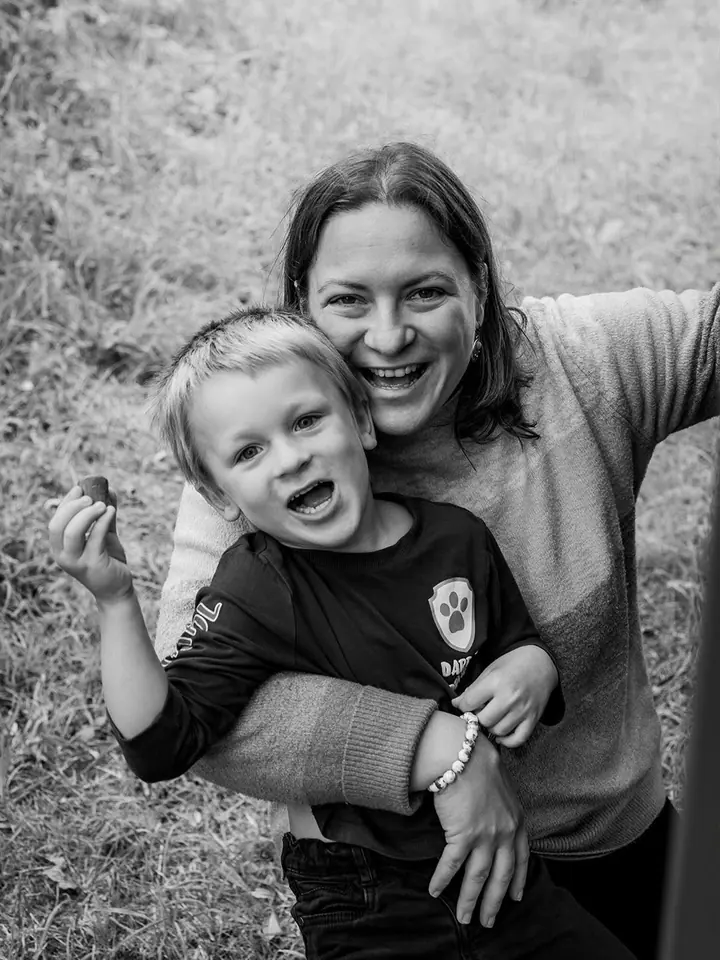
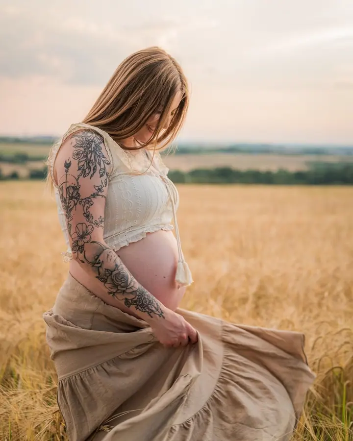

01 / 04
Svatební fotografie
Předsvatební focení, přípravy, obřad, skupinové fotky, portréty i party. Rozsah si domluvíme a nabídku připravím podle vašich představ.
Zeptat se na termín→








Svatby a rodinné focení v Plzni
Zeptat se na termín →(01) Ahoj
Jmenuji se Petra Krističová a pod značkou Zláholka fotím svatby , rodiny s dětmi a portréty . Fotím v Plzni, ve Starém Plzenci i okolí.
540lidí sleduje mou práci na Instagramu
145příspěvků s fotkami a příběhy
(02) Co fotím
01 / 04
Předsvatební focení, přípravy, obřad, skupinové fotky, portréty i party. Rozsah si domluvíme a nabídku připravím podle vašich představ.
Zeptat se na termín→02 / 04
Uvolněné focení rodin, dětí i párů. Dostanete 30 až 50 upravených fotografií.
Zeptat se na termín→03 / 04
Kombinace párových a portrétních fotografií z doby, kdy čekáte miminko. V balíčku je 30 až 40 fotek.
Zeptat se na termín→Dále nabízím
Klasické, fashion i marketingové portréty, třeba pro váš web nebo podnikání. Dodávám 10 až 15 upravených fotografií.
↗(04) Postup
Od první zprávy po hotovou galerii.
Krok 1 z 4
Napište mi přes formulář nebo e-mail, jaké fotky spolu budeme fotit.
Krok 2 z 4
Připravím nabídku s podrobnostmi k focení, u svatby přímo podle vašich představ.
Krok 3 z 4
Sejdeme se v domluvený den a místo a nafotíme to, na čem jsme se dohodli.
Krok 4 z 4
Dostanete fotografie v digitální podobě, včetně úprav.
Fotky, ke kterým se budete rádi vracet
(05) Za objektivem
Jsem fotografka z Plzně a fotím rodiny, svatby, děti a páry. Ke mně chodí i budoucí maminky na těhotenské focení a lidé, kteří potřebují portrét do práce nebo na web.
U svatby můžu být od příprav přes obřad a skupinové fotky až po večerní party. Každý den je jiný, proto vám vždy připravím nabídku podle toho, co si představujete.
Všechny fotografie dostanete v digitální podobě a už upravené. Když se mi ozvete, pošlu vám nabídku se všemi informacemi k focení.
Petra
Petra Krističová · Svatební a rodinná fotografka
Podle náročnosti 2 000 až 3 000 Kč a dostanete 30 až 50 upravených fotografií.
Svatby oceňuji individuálně podle rozsahu. Napište mi, co si představujete, a já vám připravím nabídku.
Ano, termíny svatebního focení na rok 2026 jsou už dostupné a můžete si je rovnou zarezervovat.
Veškeré platby probíhají pouze bankovním převodem na základě faktury.
(07) Kontakt
Napište pár vět o tom, co si představujete, a termín, který se vám hodí.
nejsem@zlaholka.cz